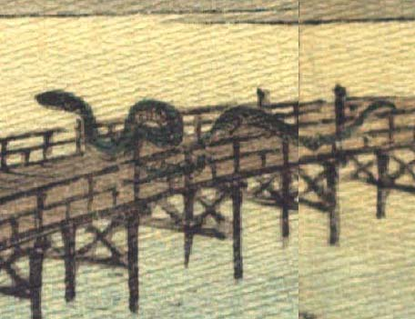

大蛇。うねりながら橋を渡っている。
著作者：J.Dautremer／出典：親書誌：U426_nichibunken_0118：Monseigneur sac de riz／日付：2006／資源識別子：U426_nichibunken_0118_0002_0000
Copyright (c)2010- International Research Center for Japanese Studies, Kyoto, Japan. All rights reserved.